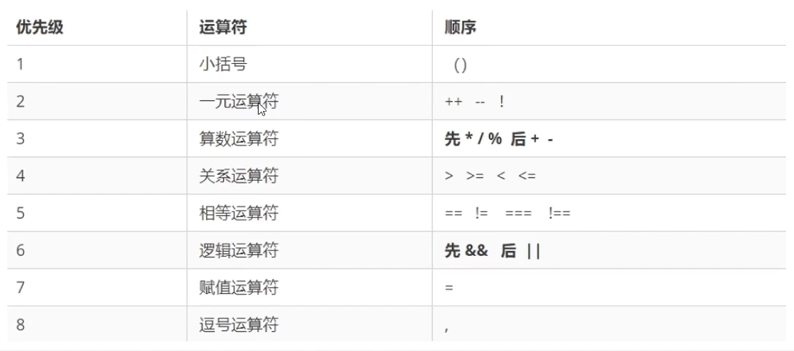
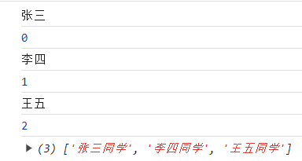
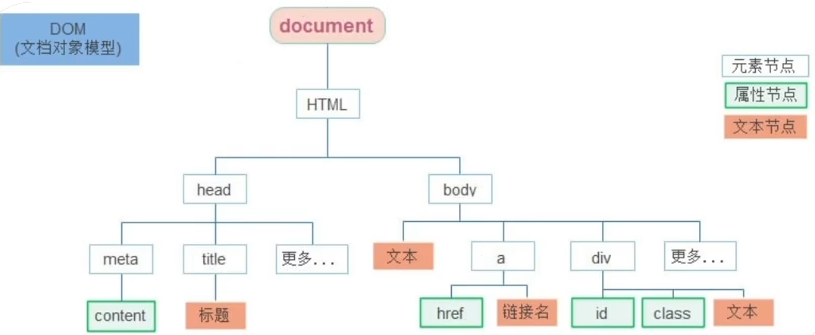
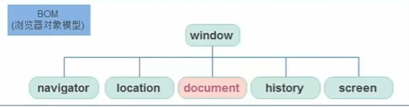
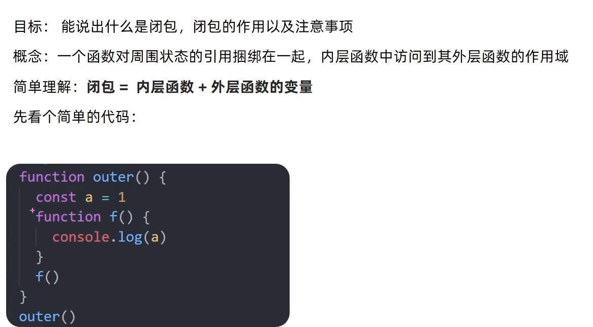
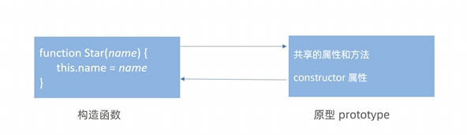

笔记开始日期：2024年2月22日 笔记最新更新日期：2024年3月11日 笔记更新状态：正在更新......
你好：
首先感谢你使用这份笔记手册，一起学习，一起进步，本学习笔记是我在自学过程（网课视频在下方链接）中的随手笔记，可能出现遗漏，顺序错误或语法，单词等错误，你可以在自己的学习过程中对这份笔记更正即可。 这个笔记是我重新学习前端时所创建的，所以省略了很多内容。其他缺失的部分如有需要可参见开发文档
参考资料：
视频资料：
Html+css:
JavaScript：【黑马程序员前端JavaScript入门到精通全套视频教程，javascript核心进阶ES6语法、API、js高级等基础知识和实战教程】 https://www.bilibili.com/video/BV1Y84y1L7Nn/?p=7&share_source=copy_web&vd_source=ea0cf64e8dac6f0193a7e28187a0fccb
开发文档：
前言到此结束。下面是笔记部分：
暂未更新
##
xxxxxxxxxx//弹窗输出alert("1");//控制台输出console.log('1');//网页输出docment.write('1');//表单输入 //input//弹窗输入prompt();
xxxxxxxxxx//变量的声明//关键字 +变量名let name;//赋值name="张三";变量更新时，不需要加关键字（let var等），否则会报错
xxxxxxxxxx//使用const//声明常量const A =10;//使用常量console.log(A);注意：常量不能被重新赋值，必须在声明赋值。
JS是一种弱类型的语言，在赋值后才知道是什么数据类型。
number-数字型 整数，小数，等等都属于数字型
string-字符串型 通过单引号（' '），双引号（""），反引号（` `）包裹的数据都叫字符串 字符串拼接
xxxxxxxxxxlet a = "张三"let b = "李四"let c;c = a + b;console.log(c);boolean-布尔型
undefined-未定义型
null-空类型
object对象
模板字符串通常用来拼接字符串和变量
xxxxxxxxxxlet a = "张三"let b = "李四"
console.log(`这两个人的名字叫${a},${b}`);在JavaScript中，prompt，input输入的数据为string类型，如输入数字进行运算时，需要转换成数字型。
xxxxxxxxxxtypeof name;xxxxxxxxxx//转换成数字型//使用number()Number("123")//parseInt()-只保留整数parseInt("3.14")//3//parseFloat()-保留小数parseFloat("3.14")+：在”+两边只要有一个字符串，就会把另一个数据转换成字符串“
除了+以外的（/，*，-），都可以吧数据转换成数字型。
在数字前加上一个+可以把字符串类型的数据转换成数字型。例如：+'123'
| 符号 | 含义 |
|---|---|
| + | 求和 |
| - | 求差 |
| * | 求积 |
| / | 求商 |
| % | 取余 |
| 运算符 | 含义 |
|---|---|
| > | 大于 |
| < | 小于 |
| >= | 大于等于 |
| <= | 小于等于 |
| == | 等于 |
| === | 全等（值和类型都必须相同） |
| != | 不等 |
| !== | 全不等 |
比较运算符的返回值为bool类型，true或false
=，+=，-=，*=，/=，%=
自增： 后置自增：a++ 先使用再自增 前置自增：++a 先自增再使用
自减：a-- 后置自减：a-- 先使用再自减 前置自减：--a 先自减再使用
| 运算符 | 含义 | 备注 |
|---|---|---|
| && | 逻辑与 | 一假则假 |
| || | 逻辑或 | 一真则真 |
| ! | 逻辑非 | 真变假，假变真 |

xxxxxxxxxxif (条件1) { // 语句}else if (条件2) { // 语句}else { // 语句}xxxxxxxxxxswitch(数据){ case 值1:{ //语句 break; } case 值2:{ //语句 break; } case 值3:{ //语句 break; } default:{ //语句 break; }}
xxxxxxxxxx//三元运算符语法条件?满足条件执行的代码:不满足条件执行的代码
xxxxxxxxxx//for循环语法//for(变量起始值;终止条件;变量变化量)for(let i=0;i<10;i++){ //循环体}xxxxxxxxxx//while循环语法while(循环条件){ //循环体}xxxxxxxxxx//do-while循环语法continue：跳过本次循环，开始下次循环 break：终止循环
xxxxxxxxxx//数组声明let arr_name = [1,2,3,4,5]//取得数组的数据时，用数组下标
数组中可以存储任意类型的数据
xxxxxxxxxx//使用 数组名.push()可以将数据添加到数组末尾let arr_name = [1,2,3,4,5]arr_name.push(6)xxxxxxxxxxlet arr_name = [1,2,3,4,5]//将第二个元素改为10arr_name[1]=10;xxxxxxxxxx//查询let arr_name = [1,2,3,4,5]//取得数组的数据时，用数组下标//数组名[下标]console.log(arr_name[0])//1console.log(arr_name[4])//5
//筛选//将数组中大于等于50的数筛选出来放入新数组中let num = [15, 69, 88, 47, 58, 98, 74, 85, 21, 0, 14, 26, 5, 56, 92, 41]let new_num = [] for (let index = 0; index < num.length; index++) { if (num[index] >= 50) { new_num.push(num[index]) } else { continue; } } console.log(new_num);xxxxxxxxxx//删除数组的最后一个元素数组名.pop();//每执行一次这个语句删除末尾一个元素//删除数组的第一个元素数组名.shift();//每执行一次这个语句删除第一个元素//删除指定位置的元素数组名.splice(起始位置，删除几个元素)//若删除元素个数不写，则全部删除后面的元素map()
map可以遍历数组处理数据，并返回新的数组
xxxxxxxxxx <script> let name = ['张三', '李四', '王五'] let newarr = new Array() newarr = name.map(function (ele, index) { console.log(ele);//显示元素 console.log(index);//显示索引号 return ele + '同学' }) console.log(newarr);
</script>
join() 将数组中的元素转换成一个字符串
xxxxxxxxxxlet name = ['张三', '李四', '王五'] // name.join('分隔符') console.log(name.join('='));forEach()
用于调用数组的每个元素，并将元素传递给回调函数
使用场景：遍历数组的每个元素
语法：
xxxxxxxxxx数组.froEach(function(当前数组元素,索引号){//函数体})
当前数组元素必须写，索引号可写可不写
forEach()只起遍历作用。不return
适合遍历数组对象
filter()
作用数组
返回新数组，返回的是满足筛选条件的数组元素
reduce()
作用：累计器
返回累计处理的结果，常用于求和等
xxxxxxxxxxconst arr = [1, 2, 3, 4, 5]const c = arr.reduce((a, b) => {a += breturn a}, 累加初始值);console.log(c);
其他方法 更多数组方法，见MDN文档
求数组的最大值（最小值同理）
xxxxxxxxxx<script> let n = [1, 22, 13, 11, 35, 165, 88, 900] let max = n[0] for (let i = 1; i < n.length; i++) { if (n[i] > max) { max = n[i] } else { continue; } } console.log(`最大值为：${max}`); //还可以使用三元运算符，可以更简单的实现</script><script>//冒泡排序let num = [15, 69, 88, 47, 58, 98, 74, 85, 21, 0] let change; //将数组中大于等于50的数筛选出来放入新数组中 for (let i = 0; i < num.length - 1; i++) { for (let index = 0; index < num.length - 1 - i; index++) { if (num[index] > num[index + 1]) { change = num[index] num[index] = num[index + 1] num[index + 1] = change } else { continue; }
} } console.log(num);</script>函数是被设计为执行特定任务的代码块。
xxxxxxxxxx//语法//函数的声明function function_name(){//函数体}//函数的调用function_name();xxxxxxxxxxfunction name(参数1，参数2，){ //函数体}xxxxxxxxxxfunction name(参数1，参数2，){ //函数体 return;}注意
在函数体中使用return关键字能将内部的执行结果交给函数外部
return后面的代码不会再执行，会立即结束当前函数，所以return数据不能换行写
return函数可以没有return此时返回值为undefined
没有函数名的函数
xxxxxxxxxx//函数表达式let fun = function(){//函数体}//调用fun()//匿名函数必须先声明再调用//而具名函数在声明前后都可以调用
//立即执行匿名函数(function(){ //函数体})();(function(){ //函数体}())xxxxxxxxxxfunction add(x,y){//逻辑中断x=x||0;y=y||0;return x+y;} 注意： 逻辑中断只存在“&&”和“||”中，当满足一定条件时，右侧的代码就不执行了 &&：左边为false短路 ||：左边为true短路
xxxxxxxxxxlet 对象名 ={}let 对象名 = new Object() //对象有属性和方法组成let 对象名 = { 属性名:属性值, 方法名:函数}xxxxxxxxxx//声明一个对象let stu = { ID: 20222443, name: "张三", age: 15, class: 1905
}xxxxxxxxxx//增加对象属性 对象名.新属性=新值stu.hobby="打篮球"xxxxxxxxxx//删除对象属性 delete 对象名.属性xxxxxxxxxx//修改对象属性 对象名.属性=新值stu.name="李四"xxxxxxxxxx//查询可以使用 对象名.属性 格式查询//查询学生姓名(方法1)stu.name//查询学生姓名(方法2)//对象名['属性名']stu["name"]xxxxxxxxxx// 对象方法 let car = { name: "小米汽车", opendoor: function () { console.log("打开车门"); }, kaiche: function () { console.log('启动发动机，挂挡，开起来'); } }对象是无序的，不能使用下标
xxxxxxxxxxfor(let i in stu){console.log(i)//输出的是属性名console.log(stu[i])//输出的属性值}请参阅MDN文档--
xxxxxxxxxx//使用数学内置对象生成随机整数Math.random()//返回值为0-1(包含0不包含1)//取0-10的随机整数Math.floor(Math.random()*(10+1))//取0-n的随机整数Math.floor(Math.random()*(n+1))//取5-10的随机整数Math.floor(Math.random()*(5+1))+5//取M-N的随机整数Math.floor(Math.random()*(N-M+1))+MAPI作用：通过js操作html和浏览器
可以操作网页内容，实现开发网页内容特效和实现用户交互

DOM对象是浏览器根据HTML标签生成的JS对象
所有标签属性都可以在这个对象上找到
修改这个对象的属性自动映射到标签身上
DOM核心思想
把网页内容当作对象来处理
document对象
是DOM里提供的一个对象
所以它提供的属性和方法都是用来访问和操作网页内容的
例如：document.write()
网页所有内容都在document里
通过css选择器获取（⭐）
xxxxxxxxxx//获取一个元素document.querySelector('css选择器')//获取多个元素 获取所有ul 里的LIdocument.querySelectorAll('ul li')获取其他DOM元素（了解）
xxxxxxxxxx//修改元素属性//对象.innerText属性<div class="box">你好</div> <script> const box = document.querySelector('.box'); box.innerText = 'hello' </script>//对象.innerHTML属性<div class="box">你好</div> <script> const box = document.querySelector('.box'); box.innerHTML = "hello,world" </script>innerText只识别文字，不解析标签innerHTML可以将文本内容添加或更新到标签的任意位置 innerHTML会解析标签，多标签使用模板字符串
可以通过JS设置、修改标签元素属性，比如通过src更换图片
最常见的属性比如href,title,src等
语法：对象.属性=值 对象.src ='/img/a/png'
通过style修改属性 对象.style.样式=值 语法：对象.style.color='red'
通过类名修改样式 元素.className=""
xxxxxxxxxx<style> .box { width: 100px; height: 100px; background-color: black; }
.active { width: 200px; height: 100px; background-color: rebeccapurple; } </style> <div class="box">你好</div> <script> const box = document.querySelector('.box'); box.className = "active" </script>通过classList添加样式
xxxxxxxxxx<style> .box { width: 100px; height: 100px; background-color: black; }
.active { width: 200px; height: 100px; background-color: rebeccapurple; } </style> <div class="box">你好</div> <script> const box = document.querySelector('.box'); //使用classlist追加样式 box.classList.add('active') </script>操作方法同上，语法：对象.属性=值
在标签上一律以data-开头
在DOM对象上一律以dataset对象方式获取
xxxxxxxxxx<ul> <li data-idS="1">a</li> <li data-idS="2">b</li> <li data-idS="3">c</li> <li data-idS="4">d</li> <li data-idS="5">e</li> </ul> <script> const list = document.querySelectorAll('ul li') console.log(list[0].dataset); </script>开启定时器
xxxxxxxxxx//setInterval(function () { // 函数体 // },间隔时间)setInterval(function () { // 函数体 }, 1000)关闭定时器
xxxxxxxxxxconst n = setInterval(function () { // 函数体 }, 1000)//关闭定时器clearInterval(n)xxxxxxxxxx//事件监听语法//方法1//事件源.on事件=function()<button class="but">打印</button> <script> const but = document.querySelector('.but') but.onclick = function () { console.log('hello'); } </script>//方法2//事件源.addEventListener(事件，函数)<button class="but">打印</button> <script> const but = document.querySelector('.but')
but.addEventListener('click', function () { console.log('hello'); })
</script>click：用户单击主鼠标按钮（一般是左键）或者按下在聚焦时按下回车键时触发
dblclick：用户双击主鼠标按键触发（频率取决于系统配置）
mousedown：用户按下鼠标任意按键时触发
mouseup：用户抬起鼠标任意按键时触发
mousemove：鼠标在元素上移动时触发
mouseover：鼠标进入元素时触发
mouseout：鼠标离开元素时触发
mouseenter：鼠标进入元素时触发，该事件不会冒泡
mouseleave：鼠标离开元素时触发，该事件不会冒泡
区别：
over和out，不考虑子元素，从父元素移动到子元素，对于父元素而言，仍然算作离开
enter和leave，考虑子元素，子元素仍然是父元素的一部分
mouseenter和mouseleave不会冒泡
所有的鼠标事件，事件处理程序中的事件对象，都为 MouseEvent
altKey：触发事件时，是否按下了键盘的alt键
ctrlKey：触发事件时，是否按下了键盘的ctrl键
shiftKey：触发事件时，是否按下了键盘的shift键
button：触发事件时，鼠标按键类型
0：左键
1：中键
2：右键
keydown：按下键盘上任意键触发，如果按住不放，会重复触发此事件
keypress：按下键盘上一个字符键时触发
keyup：抬起键盘上任意键触发
keydown、keypress 如果阻止了事件默认行为，文本不会显示。
KeyboardEvent
code：得到按键字符串，适配键盘布局。
keyCode、which：得到键盘编码
focus：元素聚焦的时候触发（能与用户发生交互的元素，都可以聚焦），该事件不会冒泡
blur：元素失去焦点时触发，该事件不会冒泡。
submit：提交表单事件，仅在form元素有效。
change：文本改变事件
input: 文本改变事件，即时触发
页面加载事件
等待外部资源（图片，css，js等加载完毕后触发的事件）
事件名：load
监听页面所有资源加载完毕后：给window添加load事件
xxxxxxxxxxwindow.addEventListener('load', function () { alert('页面加载完成') })DOMContentLoaded事件
当初始的HTML文档被完全加载和解析完之后，DOMContentLoaded事件被触发，而无需等待样式表，图像等加载完成
使用方式：为document添加
xxxxxxxxxxdocument.activeElement('DOMContentLoaded', function () {alert('dom加载完成')})
页面滚动事件
事件名：scroll
xxxxxxxxxx//监听页面滚动事件window.activeElement('scroll', function () { alert('页面正在滚动') })获取位置
scrollLeft和scrollTop(属性)
获取被卷去的大小
获取元素内容向左向上滚去的距离
这两个值可读可写
获取html元素的方法
xxxxxxxxxx <div style="height: 1400px;">
</div> <script> window.addEventListener('scroll', function () { console.log(document.documentElement.scrollTop); }) </script>页面尺寸和位置
事件名：resize
xxxxxxxxxxwindow.addEventListener('resize', function () { console.log(document.documentElement.scrollTop); })client家族：显示可见部分的宽度高度等数据 包含padding，不包含border
offset家族：与client相似，但可以包含padding和border
位置 offsetLeft，offsetTop获取元素与左侧和上侧的位置 注意：这两个属性均为只读属性，不可写 获取的数据是最近一级带有定位的父级元素的左侧和上侧的距离
更多事件参考：事件参考 | MDN (mozilla.org)
在事件绑定的回调函数第一个参数就是事件对象
一般命名为event,ev,e
xxxxxxxxxx<script> const but = document.querySelector('.but') but.addEventListener('click',function(e){}) </script>事件对象属性
type：获取当前的事件类型
page：pageX、pageY，当前鼠标距离页面的横纵坐标
client: clientX、clientY，鼠标相对于视口的坐标
offset：offsetX、offsetY，鼠标相对于事件源的内边距的坐标
screen: screenX、screenY，鼠标相对于屏幕
x、y，等同于clientX、clientY
movement：movementX、movementY，只在鼠标移动事件中有效，相对于上一次鼠标位置，偏移的距离
key：得到按键字符串，不适配键盘布局。能得到打印字符。
xxxxxxxxxx//获取输入的按键<input type="text"> <script> const but = document.querySelector('input') but.addEventListener('keyup', function (e) { //获取输入的按键 console.log(e.key); }) </script>this是指向的函数的调用者，谁调用就是谁
xxxxxxxxxx<script> const but = document.querySelector('.but') but.addEventListener('click', function () { console.log(this); }) </script>//输出结果//<button class="but">打印</button>如果函数A的结果传递给函数B，则称函数A为回调函数
xxxxxxxxxx//常见的回调函数<script> function fu(){ console.log('yes'); } setInterval(fu,1000)</script>由大到小
xxxxxxxxxx//语法dom.addEventListener(事件类型，函数，是否使用捕获机制true)
由小到大
什么是事件冒泡? 当一个元素的事件被触发时，同样的事件将会在该元素所有祖先元素中依次被触发，这一过程被称为事件冒泡。
当一个元素被触发后，会向上依次调用所有父级元素的同名事件
xxxxxxxxxx<style> .one { width: 200px; height: 200px; background-color: red; }
.two { width: 100px; height: 100px; background-color: blue; z-index: 1; } </style> <div class="one"> <div class="two"></div> </div> <script> document.addEventListener('click', function () { alert('max') }) document.querySelector('.one').addEventListener('click', function () { alert('one') }) document.querySelector('.two').addEventListener('click', function () { alert('two') }) </script>当点击two时，会向上冒泡执行one 和max
由于冒泡时默认存在的，容易影响到父级元素，在需要时，要进行阻止冒泡
xxxxxxxxxx//事件对象.stopPropagation()e.stopPropagation()e.preventDefault()
xxxxxxxxxx//on事件解绑对象.onclick = null//addEventListener事件对象.removeEventListener(type,function)
注意，匿名函数无法解绑，如需解绑函数，需要为函数命名
鼠标事件的区别
mouseover：鼠标进入元素时触发
mouseout：鼠标离开元素时触发
mouseenter：鼠标进入元素时触发，该事件不会冒泡
mouseleave：鼠标离开元素时触发，该事件不会冒泡
优点：使用事件委托可以减少事件注册的次数，提高程序性能
原理：事件委托利用事件冒泡的特点 为父元素注册事件，当触发子元素时，会冒泡到父元素上
xxxxxxxxxx <ul> <li>1</li> <li>2</li> <li>3</li> <li>4</li> <li>5</li> <li>6</li> </ul> <script> const ul = document.querySelector('ul') ul.addEventListener('click', function () { alert(123) }) </script>点击每个元素时，都会触发父元素ul的事件
===============
如何知道点击的那个对象
xxxxxxxxxx<ul> <li>1</li> <li>2</li> <li>3</li> <li>4</li> <li>5</li> <li>6</li> </ul> <script> const ul = document.querySelector('ul') ul.addEventListener('click', function (e) { /*使用事件对象：e.target得到当前的点击对象*/ e.target.style.color = 'red' //e.target.tagName 获取点击元素的标签名 }) </script>使用事件委托实现导航栏 示例
xxxxxxxxxx<style> .nav { display: flex; width: 400px; flex-direction: column; border: 1px solid rebeccapurple; }
ul { flex: 0 0 auto; margin: 0; padding: 0; list-style: none; }
ul li { text-align: center; display: inline-block; }
.mains { flex: 1 1 auto; border: 1px solid; }
.item { min-height: 300px; display: none; }
.active { display: block;
} </style>
<div class="nav"> <ul> <li data-id="1">第1个</li> <li data-id="2">第2个</li> <li data-id="3">第3个</li> <li data-id="4">第4个</li> <li data-id="5">第5个</li> </ul> <div class="mains"> <div class="active item">第1个的内容</div> <div class="item">第2个的内容</div> <div class="item">第3个的内容</div> <div class="item">第4个的内容</div> <div class="item">第5个的内容</div> </div> </div> <script> document.querySelector('.nav ul').addEventListener('click', function (e) {
if (e.target.tagName === 'LI') {
document.querySelector('.mains .active').classList.remove('active') document.querySelector(`.mains .item:nth-child(${+e.target.dataset.id})`).classList.add('active') console.log(typeof +e.target.dataset.id); } }) </script>xxxxxxxxxx//日期对象实例化const time = new Date()//获得当前时间//指定时间const time = new Date('2022-2-2 00:00:00')
日期对象方法
| 方法 | 作用 | 说明 |
|---|---|---|
| getFullYear() | 获取年份 | 4位：2022 |
| getMonth() | 获取月份 | 取值：0-11 |
| getDate() | 获取月份的每一天 | 月份不同取值不同 |
| getDay() | 获取星期 | 取值：0-6 |
| getHours() | 获取小时 | 取值：0-23 |
| getMinutes() | 获取分钟 | 取值：0-59 |
| getSeconds() | 获取秒 | 取值：0-59 |
日期对象时间戳
时间戳是从1970年1月1日0时0分0秒时起到现在的毫秒数，是一种时间计量方式
获取时间戳的三种方式
xxxxxxxxxx//方法1.getTime()//方法2+new Date()//方法3Date.now()查询节点
父节点查找 parentNode属性 返回最近一级的父节点，找不到返回null
xxxxxxxxxx//语法子节点.parentNode
<div class="fa"> <div class="son"></div> </div> <script> console.log(document.querySelector('.son').parentNode); </script> //返回值 <div class="fa"> <div class="son"></div> </div> 子节点查找
语法1：父元素.children
进获取所有元素节点
返回的还是一个伪数组
语法2：父元素.childNodes
获得所有子节点、包括文本节点(空格，换行)、注释节点等
兄弟节点查找
下一个兄弟节点
上一个兄弟节点
xxxxxxxxxx<div> <div>1</div> <div class="a2">2</div> <div>3</div> </div> <script> const a2 = document.querySelector('.a21') a2.previousSibling //上一个兄弟节点 a2.nextSibling //下一个兄弟节点 </script>增加节点
创建节点
xxxxxxxxxx//document.createElement('标签name')const li =document.createElement('li')
追加节点
xxxxxxxxxx//读取父元素节点const ul =doc......ul.appendChild(li)//将元素追加到父元素的最后面ul.insertBefore(li)//将元素追加到父元素的最前面克隆节点
克隆节点
xxxxxxxxxx//克隆一个已有的元素节点元素.cloneNode(布尔值)//布尔值为true克隆子孙后代节点//布尔值为false只克隆当前节点
删除节点
xxxxxxxxxx//删除节点要经过父元素‘同意’，即：父元素.removeChild(要删除的元素)
| 触屏touch事件 | 说明 |
|---|---|
| touchstart | 手指触摸到一个DOM元素时触发 |
| touchmove | 手指在一个DOM元素上滑动时触发 |
| touchend | 手指从一个DOM元素上移动时触发 |
熟悉官网，了解这个插件可以完成什么需求
看在线演示，找到符合自己需求的demo
https://www.swiper.com.cn/demo/index.html
查看基本使用流程
https://www.swiper.com.cn/usage/index.html
查看APi文档，去配置自己的插件
https://www.swiper.com.cn/api/index.html
浏览器对象模型

window对象是一个全局对象，也可以说时JavaScript的顶级对象
像document，alert()等都属于window属性，基本DOM的属性和方法都属于window
所有通过var定义在全局作用域中的变量，函数，都会变成window对象的属性和方法
设置延时函数 setTimeout(回调函数,等待时间) 特点：执行一次后自动关闭，不再执行
清除延时函数 clearTimeout(name)
JavaScript语言最大特点就是单线程，同一时间只能做一件事。 单线程意味着所有任务都要排队，前面一个任务执行完，后一个任务才能开始，这会导致如果JS执行时间过车，会造成页面渲染不连贯，导致页面渲染加载阻塞的感觉 为了解决这个问题，利用多核CPU的计算能力，HTML5提出web worker标准，允许JavaScript创建多线程，于是JS中出现了同步和异步 同步：前一个任务执行完成后，再执行后一个任务 异步：前一个任务需要较长时间时，等待的时间可以处理其他任务
location的数据类型是对象，他拆分并保存了url地址的各个组成部分
.href属性：跳转页面
xxxxxxxxxx//使用location对象跳转界面 <div> <div>还有<span>5</span>秒跳转</div>
</div> <script> // 获取元素 const text = document.querySelector('span') //设置定时器修改内容 let i = 4 let time1 = setInterval(function () { text.innerHTML = i-- if (i < 0) { clearInterval(time1) location.href = 'https://www.baidu.com' } }, 1000)
</script>.search：获取地址携带的参数，？后的部分
.hash：获取地址中的哈希值，#后面的部分
.reload()：刷新当前页面 (F5), .reload(true)：强制刷新
navigator对象主要记录了浏览器自身的相关信息
通过userAgent检测浏览器的版本和平台 可以验证用户使用的是PC端还是手机端来跳转到PC或手机端页面
history对象主要管理历史记录，该对象与浏览器地址栏的操作相对应，如：前进，后退，历史记录等
常用对象和方法
| 方法 | 作用 |
|---|---|
| back() | 后退功能 |
| forward() | 前进功能 |
| go(参数) | 前进/后退功能，参数为1则前进一个界面，为-1则后退1个界面 |
数据存储在浏览器中
设置读取方便，刷新页面时不会丢失数据
容量较大。sessionStorage和localstorage约5M左右
localstorage localstorage可以永久将数据存储在本地，除非手动删除 特点： 可以多窗口共享 以键值对形式存储
储存数据
xxxxxxxxxx//语法//localstorage.setltem(key,value)localStorage.setItem(name, 'liming')//输出console.log(localStorage.getItem(name));//移出localStorage.removeItem(name)本地存储只能存储字符串类型
存储复杂数据类型
xxxxxxxxxx//若按照这样的方式储存，读取时将无法读取let obj = { name: 'liming', age: 10, genner: 'boy' } localStorage.setItem('obj', obj)//所以要先将复杂数据类型转换为字符串再进行储存let obj = { name: 'liming', age: 10, genner: 'boy' }//JSON.stringify(obj)转换字符串 localStorage.setItem('obj', JSON.stringify(obj))//获取复杂数据时，要将json字符串转换成对象console.log(JSON.parse(localStorage.getItem('boj')));
参考MDN手册解释
JS进阶部分
局部作用域
函数作用域
1．函数内部声明的变量，在函数外部无法被访问
2．函数的参数也是函数内部的局部变量
3．不同函数内部声明的变量无法互相访问
4．函数执行完毕后，函数内部的变量实际被清空了
块作用域
JavaScript中使用{ }包裹的代码称为代码块，代码块内部生命的变量将【有可能】无法访问 1．let声明的变量会产生块作用域，var不会产生块作用域
2．const 声明的常量也会产生块作用域
3．不同代码块之间的变量无法互相访问
4．推荐使用let或const
全局作用域 全局作用域中声明的变量，任何作用域都能被访问
为window对象动态添加的属性默认也是全局的，不推荐！
函数中未使用任何关键字声明的变量为全局变量，不推荐！！
尽可能少的声明全局变量，防止全局变量被污染
作用域链 作用域本质时底层的变量查找机制
在函数被执行时，会优先查找当前函数作用域中查找变量
如果当前作用域查找不到则会依次逐级查找父级作用域直到全局作用域
JS垃圾回收机制
内存的生命周期 JS环境中分配的内存，一般有如下生命周期：
内存分配：当我们声明变量、函数、对象的时候，系统会自动为他们分配内存
内存使用：即读写内存，也就是使用变量、函数等
内存回收：使用完毕，由垃圾回收器自动回收不再使用的内存
说明： 全局变量一般不会回收（关闭页面回收） 一般情况下局部变量的值，不用了，会被自动回收掉
内存泄漏：程序中分配的内存由于某种原因程序未释放或无法释放叫做内存泄漏

闭包作用：封闭数据，提供操作，外部也可以访问函数内部的变量
变量提升：把所有var声明的变量提升到当前作用域的最前，只提升声明，不提升赋值
动态参数arguments
例如，不知道用户要传入几个参数，不需要为函数添加参数，可以使用arguments获取所有函数输入的参数
xxxxxxxxxx function sum() { console.log(arguments); }sum(1, 2, 3)sum(1, 2)arguments是一个伪数组
arguments只存在于函数中
剩余参数
不知道用户要传入几个参数时，可以用剩余参数
xxxxxxxxxx//语法：function sum(...name)<script> function sum(name) { console.log(name); } sum(1, 2, 3)
</script>剩余参数是一个真数组
数组解构
数组解构是将数组的单元值快速批量赋值给一系列变量的简介语法 语法：
const [a1,a2,a3]=[1,2,3]
变量的顺序对应数组单元格位置依次进行赋值
xxxxxxxxxxconst [min, mid, max] = [10, 20, 30]//交换ab的值let a = 1 let b = 2; [b, a] = [a, b] console.log(a, b);对象解构
xxxxxxxxxx //注意key必须和解构变量名相同，也不能和其他变量名冲突 const { name, age } = { name: '张三', age: 10 } console.log(name, age);//对象解构的变量名可以重新命名//格式：旧变量名:新变量名 const { name:newname, age:newage } = { name: '张三', age: 10 } console.log(newname, newage);//对象多级解构const { name, data: { age, addres } } = { name: '张三', data: { age: 18, addres: 'hebei' } }
目的：引入箭头函数可以更简短的写函数，并且不绑定this，箭头函数的语法比函数表达式更加简洁
使用场景：箭头函数更适用于那些本来需要匿名函数的地方
基本语法
xxxxxxxxxx//箭头函数const fn = ()=>{//函数体 //函数体}//只有一个形参时可以省略小括号const fn = x=>{//函数体 //函数体}//函数体中只有一行代码时，可以省略大括号const fn = x=>//语句//只有一行代码且需要返回值时，可以省略return箭头函数参数
箭头函数中没有arguments函数，有剩余参数
xxxxxxxxxx<script> const fn = (arr) => { let sum = 0; for (let i = 0; i < arr.length; i++) { sum += arr[i] } return sum } console.log(fn(1, 23, 44)); </script>箭头函数this
xxxxxxxxxx<script> const fn = () => { console.log(this); } fn() </script>//箭头函数中的This指向windowconst a= {}
const a= new object()
利用构造函数创建的对象
构造函数是一种特殊的函数，主要用于初始化对象
场景：可以通过构造函数快速创建多个类似的对象
xxxxxxxxxx //使用构造函数创建多个类似对象<script> function Data(name, age, sex) { this.name = name this.age = age this.sex = sex } const fa = new data('张三', 16, '男') const ma = new data('李四', 17, '女') const son = new data('王五', 17, '男') console.log(fa); console.log(ma); console.log(son); </script>技术上的约定：
函数名首字母大写
只能由new操作符来执行
满足这两个条件认为是构造函数
内置构造函数
Object
Array
String
Number
其他内置构造函数及使用方法见MDN文档
实例成员：通过构造函数创建的对象称为实例对象，实例对象中的属性和方法称为实例成员
静态成员：构造函数中的属性和方法称为静态成员
构造函数虽然好用，但存在浪费内存的问题
xxxxxxxxxxfunction data(name, age, sex) { this.name = name this.age = age this.sex = sex this.fn = function () { console.log('我是一样的'); } } //在这三个实例化对象中fn是一样的，但在内存中存储三份，会造成内存浪费问题 const fa = new data('张三', 16, '男') const ma = new data('李四', 17, '女') const son = new data('王五', 17, '男') console.log(fa); console.log(ma); console.log(son);原型
目标：能够利用原型对象实现方法共享
构造函数通过原型分配的函数是所有对象所共享的。
JavaScript 规定，每一个构造函数都有一个prototype属性，指向另一个对象，所以我们也称为原型对象
这个对象可以挂载函数，对象实例化不会多次创建原型上函数，节约内存
我们可以把那些不变的方法，直接定义在prototype 对象上，这样所有对象的实例就可以共享这些方法。
构造函数和原型对象中的this都指向 实例化的对象
xxxxxxxxxxfunction data(name, age, sex) { this.name = name this.age = age this.sex = sex
} data.prototype.sim = function () { console.log('我是一样的'); } const fa = new data('张三', 16, '男') const ma = new data('李四', 17, '女') const son = new data('王五', 17, '男') console.log(fa.sim()); console.log(son.sim === ma.sim);//trueconstructor属性
作用：该属性指向该原型对象的构造函数
当以对象形式追加函数时，需要使用constructor属性重新指回构造函数
xxxxxxxxxxfunction data(name, age, sex) { this.name = name this.age = age this.sex = sex
} data.prototype = { constructor: data,//重新指向构造函数 sing: function () { console.log('唱歌'); }, jump: function () { console.log('跳舞'); } }对象原型
对象都有一个__photo__属性，指向构造函数的prototype原型对象，之所以我们对象可以使用构造函数prototype原型对象的属性和方法，就因为有__photo__原型的存在
注意：
proto_ 是JS非标准属性
[[prototype]]和proto意义相同
用来表明当前实例对象指向哪个原型对象prototype
__photo__对象原型里面也有一个constructor属性，指向创建该实例对象的构造函数
原型继承
xxxxxxxxxxconst jicheng = { eyes: 2, arm: 2 } function man() {
} //prototype继承 man.prototype = jicheng
原型链
参考文档。。。
浅拷贝和深拷贝只针对引用类型
浅拷贝
常用方法：
拷贝对象：Object.assgin(新对象，老对象) 或{...obj}
拷贝数组：array.prototype.concat() 或 [...arr]
xxxxxxxxxxconst jicheng = { eyes: 2, arm: 2 } const newobj = { jicheng } newobj.eyes = 3 console.log(jicheng.eyes, newobj.eyes);//2 3深拷贝
深拷贝：拷贝的是对象，不是地址
常用方法：
通过递归实现深拷贝
lodash/cloneDeep
通过JSON.stringfy()实现
方法一：函数递归： 如果一个函数在内部可以调用其本身，那么这个函数就是递归函数
xxxxxxxxxxfunction fn(){fn()//递归}
简单理解：函数内部自己调用自己，这个函数就是递归函数递归函数的作用和循环效果类似
由于递归很容易发生“栈溢出”错误（stack overflow），所以必须要加退出条件 return
通过for循环将旧对象的参数取出放入新的对象中
方法二：通过JS库lodash里面的cloneDeep内部实现深拷贝 Lodash 简介 | Lodash中文文档 | Lodash中文网 (lodashjs.com)
方法三：把对象转换为JSON字符串 再将字符串转换成对象赋给一个新的对象
无
无
无